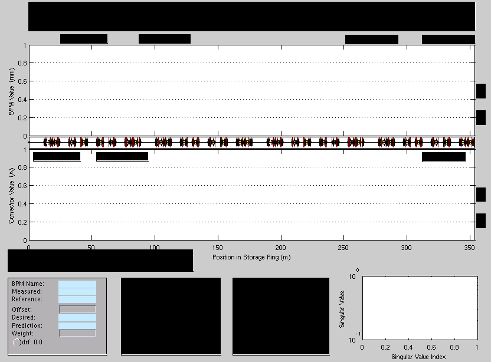
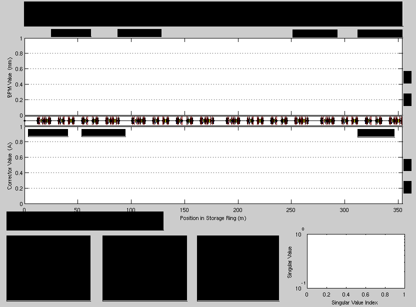
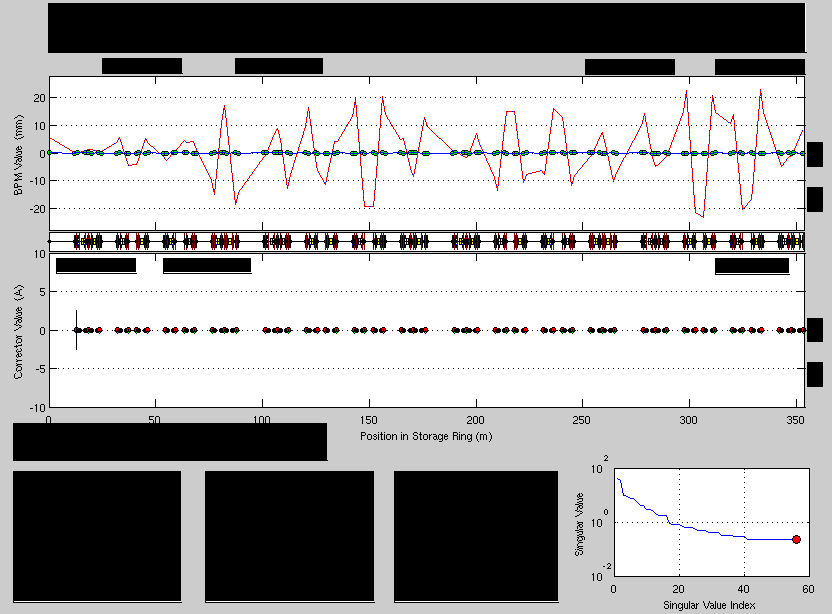

Contents
disp(' Initializing orbit control panel...');
global THERING
if isempty(getao) || ~exist('THERING','var')
disp('Warning: Load Accelerator Model and AcceleratorObjects first');
return
end
switch2hw;
vpath = getfamilydata('Directory','Orbit');
cd(vpath);
clear global SYS BPM COR RSP
setappdata(0,'SYS',[]);
setappdata(0,'BPM',[]);
setappdata(0,'COR',[]);
setappdata(0,'RSP',[]);
global SYS BPM COR RSP
BPMxFamily = 'BPMx';
BPMzFamily = 'BPMz';
HCORFamily = 'HCOR';
VCORFamily = 'VCOR';
orbfig = findobj(0,'tag','orbfig');
if ~isempty(orbfig), delete(orbfig); end
BPM = BPMInit_Orb;
COR = CORInit_Orb;
SYS.machine = 'SOLEIL';
SYS.restorefile= 'soleilrestore';
SYS.localdata = [vpath 'localdata/'];
SYS.reffile = 'silver.dat';
SYS.bpmode = 'slowacquisition';
SYS.plane = 1;
SYS.cortype = HCORFamily;
SYS.relative = 1;
SYS.current = 500;
SYS.energy = getenergy;
SYS.lifetime = 15;
SYS.units ='HW';
orbgui('OrbFig');
orbgui('BPMAxes');
orbgui('CorAxes');
orbgui('SVDAxes');
orbgui('BPMbox');
orbgui('CorBox');
orbgui('SVDBox');
orbgui('LstBox');
orbgui('PlotMenu');
orbgui('BPMMenu');
orbgui('CORMenu');
orbgui('RespMenu');
orbgui('EtaMenu');
orbgui('OptMenu');
orbgui('SimMenu');
orbgui('SuperperiodMenu');
orbgui('SYSMenu');
orbgui('UIControls');
orbgui('MachineParameters');
SYS.xlimax = getcircumference;
setappdata(0,'SYS',SYS);
orbgui('LoadRaw2Real');
orbgui('LatticeAxes');
orbgui('plotxaxis','allmachine');
BPM = RefOrb2Zero(BPM);
[SYS BPM COR RSP] = restoreorbit(vpath,SYS.restorefile,'auto',SYS,BPM,COR,RSP);
Initializing orbit control panel...
Switch to hardware units: 23-Oct-2004 22:17:41
Loading restore file... soleilrestore
Finished loading restore file... soleilrestore
 Determine the mode used in the workspace
switch getmode(HCORFamily);
case 'Online'
SYS.mode = 'Online';
set(SYS.online, 'Checked', 'On');
set(SYS.orbfig,'Name', ...
'SOLEIL Storage Ring Orbit Correction Interface (Online)');
set(SYS.modecolor,'BackGroundColor','r','String','Online');
otherwise
SYS.mode = 'Simulator';
set(SYS.sim, 'Checked', 'On');
set(SYS.orbfig,'Name', ...
'SOLEIL Storage Ring Orbit Correction Interface (Simulator)');
set(SYS.modecolor,'BackGroundColor','g','String','Simulator');
end
 Get phase advanced for machine state
optics = gettwiss(THERING,0.0);
BPM(1).phi = optics.phix(BPM(1).ATindex);
BPM(2).phi = optics.phix(BPM(2).ATindex);
COR(1).phi = optics.phix(COR(1).ATindex);
COR(2).phi = optics.phix(COR(2).ATindex);
clear optics;
disp(' Checking BPMs...');
[BPM(1).status BPM(2).status] = soleilbpmcheck;
BPM(1).avail = BPM(1).status;
BPM(2).avail = BPM(2).status;
BPM = SortBPMs(BPM,RSP);
bpmgui('GetAct');
disp(' Checking corrector magnets...');
[COR(1).status COR(2).status] = soleilcorcheck;
COR(1).avail = COR(1).status;
COR(2).avail = COR(2).status;
COR = sortcors(COR,RSP);
corgui('GetAct');
COR(1).ref = COR(1).act;
COR(2).ref = COR(2).act;
BPM = orderfields(BPM);
COR = orderfields(COR);
setappdata(0,'BPM',BPM);
setappdata(0,'COR',COR);
disp(' Initializing Plots...');
bpmgui('PlotRef_Init');
bpmgui('PlotIcons_Init');
bpmgui('PlotDes_Init');
bpmgui('PlotAct_Init');
bpmgui('PlotFit_Init');
bpmgui('PlotResp_Init');
bpmgui('PlotEig_Init');
bpmgui('PlotRef');
bpmgui('PlotBPMs');
bpmgui('PlotAct');
corgui('PlotCor_Init');
respgui('PlotSVD_Init');
SYS = orderfields(SYS);
disp(' Setting up program parameters...');
SYS.plane = 1;
for ip = 1:2
orbgui('Plane');
corgui('SaveCorrs',ip);
COR(ip).rst = COR(ip).act;
setappdata(0,'COR',COR);
end
for ip = 2:-1:1
SYS.plane=ip;
setappdata(0,'SYS',SYS);
corgui('HidePlots');
end
corgui('ShowPlots');
readwrite('ReadBPMReference','XZ','Golden');
orbgui('InitialSaveSet');
orbgui('LBox',' Finished loading Restore File');
Computing Coupled Lattice Parameters...
Computing Dispersion...
Horizontal Tune: 18.200
Vertical Tune: 10.300
Checking BPMs...
Checking corrector magnets...
Initializing Plots...
Setting up program parameters...
 Orbit in micron {default}
orbgui('BPMChangeUnits','1000xHardware');

Corrector in Harwareunits {default}
orbgui('CORChangeUnits','Hardware');
set(orbfig,'Visible','On'); drawnow;
disp(' Finished initializing orbit program');
set(findobj(0,'Tag','orbfig'),'Visible','On');
Finished initializing orbit program

Cleaning up
clear ip d vpath AO orbfig ad BPMxFamily BPMzFamily HCORFamily VCORFamily;